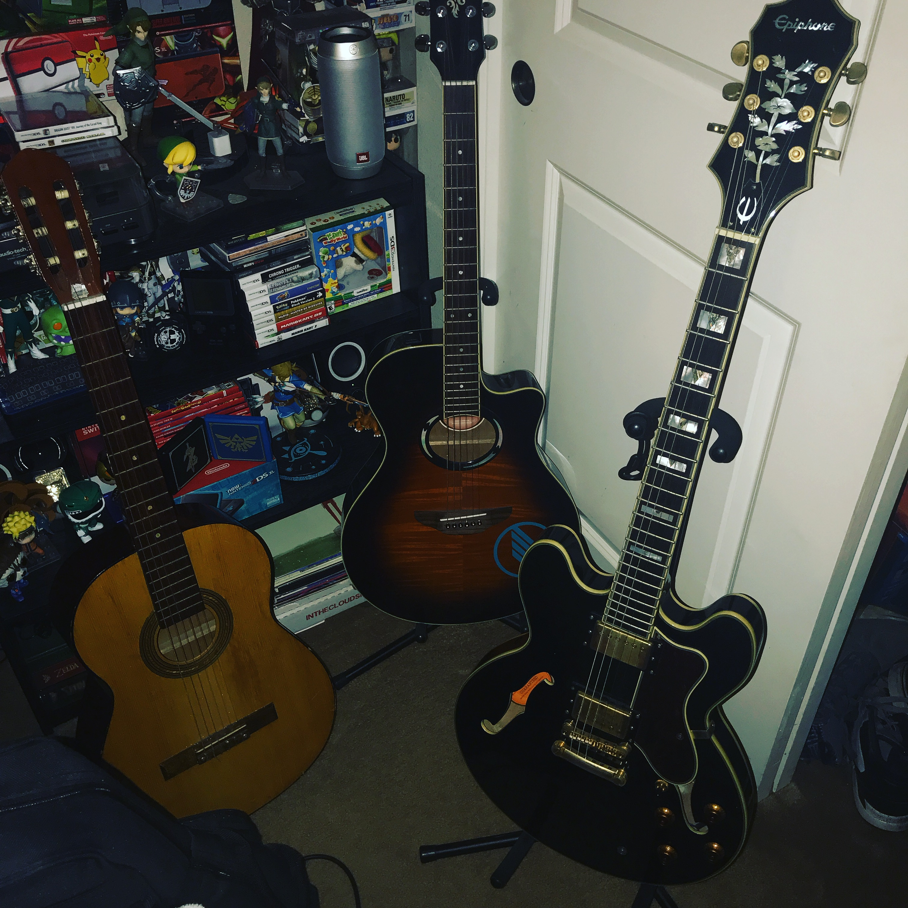
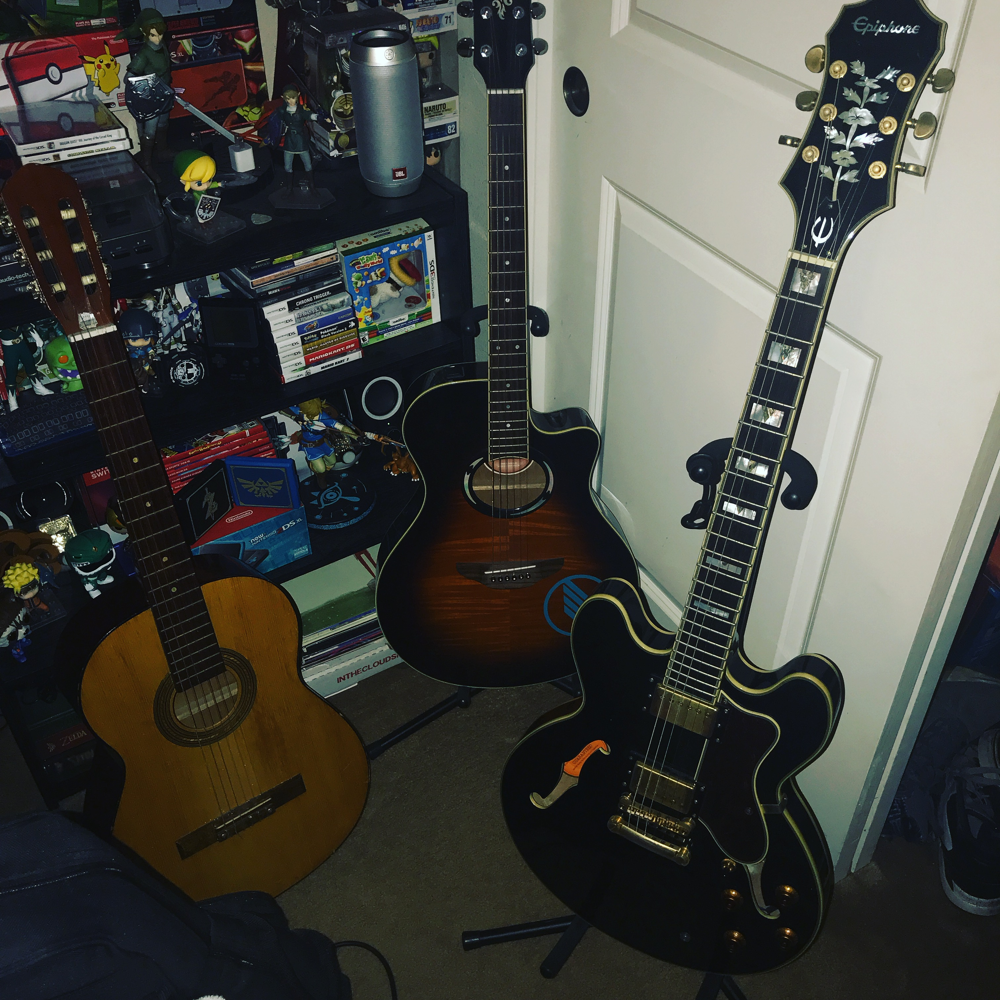

Lab 14: Styling Text Elements2
Big Idea
Working with a partner to create a second webpage as I stated in the last webpage overall this webpage was a bit more easy we didnt have any difficulties on this lab but overall the only diffult task was making the image trasnperent but overall this lab was fun.
Difficulties
We had a lot of difficulties with this lab in general. we spent a whole week working on it and at the end we are very proud of our work
Results
You are looking at my resutls. Its very interesting how we have come so far from creating a simple webpage to now trying to copy someone elses pro webpage.